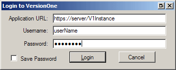
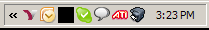
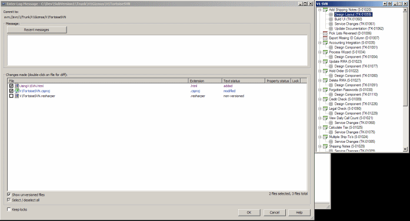
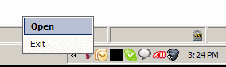

A User's Guide to V1TortoiseSVN
Introduction
V1TortoiseSVN helps you add Workitem IDs into TortoiseSVN check-in popup by showing a window which lists Stories, Defects, Tasks, and Tests assigned to you. It provides quick access to the workitems' IDs to add to the check-in comment to be read by the VersionOne Subversion Integration (V1SVN).
Contents
Description
V1TortoiseSVN helps you add Workitem IDs into TortoiseSVN by:
- Hiding in the system tray
- Popping up when you check in, with a list of Stories, Defects, Tasks, and Tests assigned to you
- Letting you quickly put the IDs of any workitems into the log message
System Requirements
- VersionOne:
- 12.2 or above, including Team Edition
- Tortoise SVN:
- 1.7.1 or above
Download
The latest version of V1TortoiseSVN is available from the VersionOne Community site
Installation
- Download the
V1TortoiseSVN.zipfile - Extract the
V1TortoiseSVN.zipto a permanent location on your computer - (opional) Create a shortcut to
V1TortoiseSVN.exein%USERPROFILE%\Start Menu\Programs\Startup - Run
V1TortoiseSVN.exe
Using
Run the application and log in. The URL, username and (optionally)
password from the last successful login are displayed. To save the
password, check
Save Password
. Click
Login
or press
Enter
to login. Click
Cancel
or press
Esc
to logout.

After a successful login, the application window will hide, and V1TortoiseSVN will run in the system tray.

V1TortoiseSVN will show the list of workitems beside the Tortoise commit window whenever it opens.

You can:
- Drag an item onto the
Messagetext box, and the ID will be added. - Double-click an item to add the ID to the
Messagetext box. - Right-click an item to copy the ID to the clipboard.
When you dismiss the commit window (
OK
or
Cancel
), the V1TortoiseSVN window will hide.
You can double-click the icon in the System tray to open the application window, or right click for a context menu. From the context menu, you can open the window, or exit the application.

To refresh the list of workitems from the server, right-click an
item, and select
Refresh
. To view the workitem in your browser, right-click the item, and
select
View
.